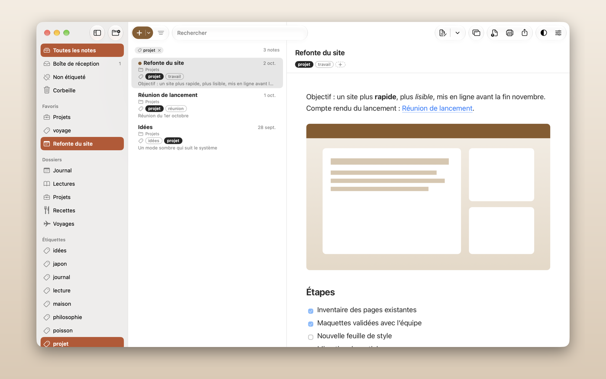
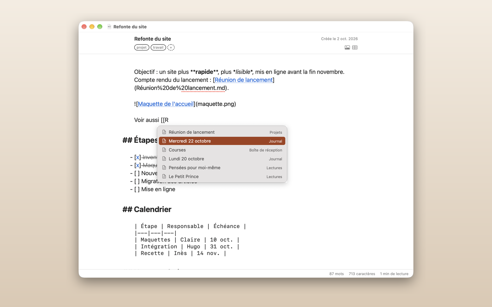
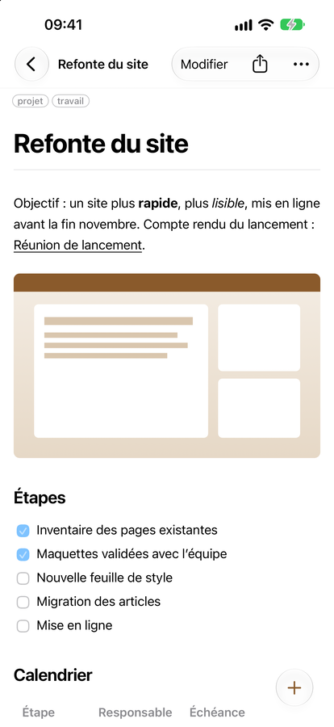
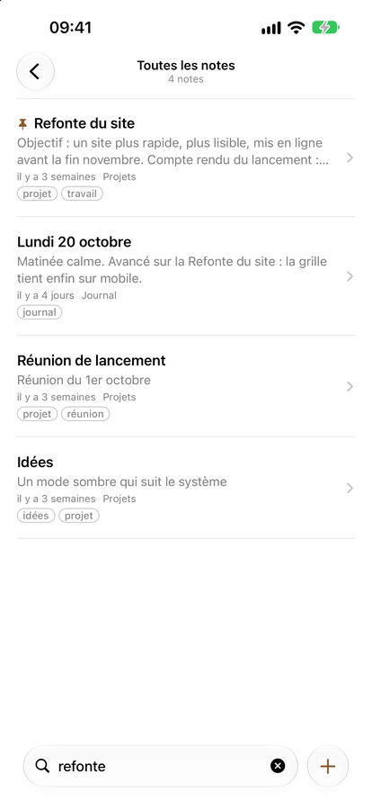
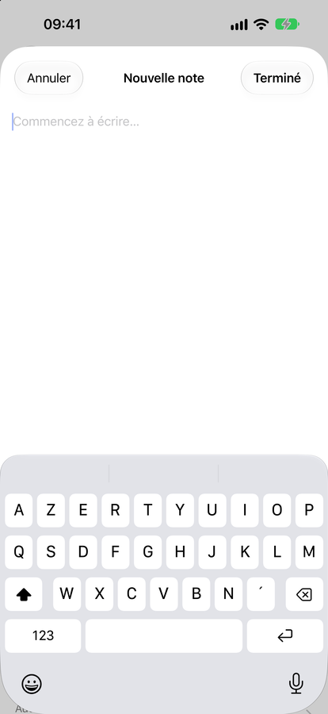

Manuel d'utilisation
Tout ce qu'il faut pour chercher, lire, classer et écrire vos notes. Le même texte est livré dans l'app, dans le dossier Bienvenue.
Lire et chercher
La fenêtre a trois colonnes : dossiers et étiquettes à gauche, la liste des notes au milieu, la note mise en forme à droite.

La barre d'outils
Chaque groupe de boutons est au-dessus de la colonne sur laquelle il agit.
- Au-dessus des dossiers : afficher ou masquer la barre latérale, et Nouveau dossier.
- Au-dessus de la liste : le + brun et Trier dans une même capsule, puis le champ de recherche. + crée une nouvelle note (depuis votre modèle, si vous en avez choisi un) ; son ⌄ liste vos modèles (voir Prendre des notes). Le menu de Trier range la liste par date de modification, date de création ou titre, en ordre croissant ou non.
- Au-dessus de la note : le bouton de l'éditeur — un clic ouvre la note dans votre éditeur, son menu ⌄ l'ouvre dans l'autre ou choisit l'app externe — et Détacher (la note dans une fenêtre de lecture à elle) ; puis Exporter en PDF, Imprimer et Partager ; puis ◐, qui passe du clair au sombre (maintenez-le pour choisir Clair, Sombre ou Système), et Réglages.
Étiquettes, épingles, favoris, déplacement et renommage sont dans le menu Fichier et dans le menu contextuel d'une note (clic droit).
La liste
L'en-tête de la liste nomme ce qu'elle montre (un dossier, la Boîte de réception, Toutes les notes…) et, à droite, combien de notes elle contient. Pendant une recherche, le nombre est suivi de l'ordre des résultats, par exemple par pertinence (voir Chercher).
Se déplacer
- Cliquez sur un dossier pour lister ses notes **et celles de ses sous-dossiers** (un réglage permet de se limiter au dossier lui-même).
- La Boîte de réception reçoit les nouvelles notes pas encore classées. Toutes les notes montre toute la bibliothèque. Corbeille garde ce que vous avez supprimé jusqu'à ce que vous la vidiez.
- Au clavier : ← et → passent des dossiers à la liste, ↑ et ↓ se déplacent dans une colonne, Espace ouvre ou ferme un dossier.
Les filtres au-dessus de la liste
Quand vous choisissez un de vos dossiers ou une étiquette dans la barre latérale, il s'affiche dans l'en-tête de la liste en petite pastille, avec son symbole et son nom.
- Cliquez la × d'une pastille pour retirer ce filtre.
⌘-cliquez plusieurs étiquettes dans la barre latérale pour les combiner : la liste garde les notes qui les portent toutes, une pastille par étiquette.- La Boîte de réception, Toutes les notes, Non étiqueté et la Corbeille n'ont pas de pastille : ce sont des lieux, pas des filtres.
Chercher
Tapez ⌘F (ou cliquez dans le champ de recherche) puis votre texte. La liste se réduit pendant la frappe, sur les titres, les noms de fichier (sans le .md), les étiquettes et tout le texte des notes, sans tenir compte des majuscules ni des accents.
Pendant une recherche, les résultats sont classés par pertinence : une correspondance dans le titre ou le nom de fichier d'abord, puis dans une étiquette, puis dans le texte ; l'ordre que vous avez choisi départage les ex æquo. Pour les voir dans un autre ordre, ouvrez Trier pendant la recherche et choisissez une date ou le titre ; Pertinence (pendant la recherche), en haut du même menu, remet les meilleures correspondances en premier. L'en-tête de la liste dit toujours l'ordre en vigueur, par exemple par pertinence ou par date de modification. Ce choix vaut pour les recherches suivantes, jusqu'à ce que vous quittiez Shokonotes.
Quand le champ de recherche est vide et prend le clavier (un clic, ou ⌘F), une petite carte s'affiche dessous pour rappeler ce qui suit ; taper ou Échap la ferme. La même carte est dans Édition ▸ Syntaxe de recherche… et Aide ▸ Syntaxe de recherche…. Cliquez un exemple pour l'essayer.
| Vous tapez | Vous obtenez | |
|---|---|---|
budget plan | les notes qui contiennent les deux mots | |
"plan 2027" | les notes qui contiennent cette expression exacte | |
budget -brouillon | les notes avec budget mais sans brouillon | |
budget -"premier jet" | les notes avec budget mais sans l'expression premier jet | |
| `budget \ | plan` | les notes avec l'un ou l'autre (la barre est un mot à part, entre espaces) |
rm "-rf" | les guillemets cherchent un texte tel quel, ici un texte qui commence par un tiret |
Un tiret devant un mot exclut toutes les notes qui le contiennent : pour chercher quelque chose comme -rf, mettez-le entre guillemets.
Échap agit de la même façon dans toutes les colonnes, les dossiers, la liste et la note : il ferme d'abord la barre de recherche dans la note si elle est ouverte, puis efface le texte de la recherche, puis les pastilles d'étiquettes. Il ne vous fait jamais quitter le dossier où vous êtes ; cette pastille-là ne part que par sa × ou depuis la barre latérale.
⌘↩ (Commande-Retour) dans le champ de recherche ouvre la note dont le titre, ou le nom de fichier, est ce que vous avez tapé, comme Entrée l'ouvre. S'il n'y en a pas, il la crée : chercher, ne rien trouver, créer. La nouvelle note est faite comme avec ⌘N, dans le dossier où vous êtes et depuis votre modèle par défaut si vous en avez choisi un.
Si votre bibliothèque est dans iCloud Drive, une note dont le fichier n'est pas téléchargé sur ce Mac est cherchée par son titre, son nom de fichier et ses étiquettes, pas par son texte. L'en-tête de la liste dit combien, par exemple 3 notes non cherchées (dans iCloud), de même que le message affiché quand rien ne correspond ; l'iPhone affiche la même ligne.
Une fois une note ouverte, la recherche surligne les mots dedans ; ⌘G va à l'occurrence suivante, ⇧⌘G à la précédente.
Lire ne modifie rien
Sélectionner, parcourir et chercher ne vous mettent jamais en mode édition. Une note ne change que lorsque vous l'ouvrez explicitement pour écrire (voir Prendre des notes).
Avec le clavier sur la note, ↑ et ↓, Espace, Page précédente / Page suivante, Début et Fin la font défiler ; ⇧ avec les flèches sélectionne du texte et ⌘C le copie ; ← revient à la liste.
Un lien vers une autre note de la bibliothèque, écrit avec un chemin relatif comme [voir](../Projets/Plan.md), sélectionne cette note quand vous le cliquez. Un lien vers une page web s'ouvre dans votre navigateur.
Liens entrants
Sous la note, Liens entrants liste les notes dont le texte pointe vers elle. Cliquez-en une pour la sélectionner. Le panneau n'apparaît que s'il y a de telles notes, et sa flèche le replie.
Images du web
Shokonotes n'accède jamais au réseau. Une image dont l'adresse est sur le web (https://…) n'est jamais téléchargée : la note affiche à sa place un cadre discret avec le nom du site et la description de l'image. Si l'image est dans un lien, un clic ouvre toujours ce lien dans votre navigateur. Les images rangées à côté de vos notes s'affichent normalement.
Épingles et favoris
Épinglez une note pour la garder en haut de sa liste : clic droit, balayage de la ligne, ou Fichier ▸ Épingler. Une note épinglée est marquée d'un petit point brun. Notes, dossiers et étiquettes peuvent devenir favoris depuis leur menu contextuel, et un dossier peut recevoir son propre symbole (clic droit ▸ Choisir un symbole…).
Quand vous avez beaucoup d'étiquettes, la barre latérale montre les douze que vous utilisez le plus, suivies de Toutes les étiquettes…, qui déplie les autres. Une longue liste de favoris se termine de la même façon, par Tous les favoris….
Lire dans sa propre fenêtre
Pour garder une note sous les yeux, par exemple sur un second écran, cliquez Détacher dans la barre d'outils, choisissez Fichier ▸ Détacher la note en lecture (⌥⌘Entrée), ou faites un clic droit sur une note. Une fenêtre s'ouvre avec cette note, en lecture seule, dans votre thème d'aperçu. Elle suit le fichier quand il change ou est renommé, et peut passer en plein écran. Fermez-la avec ⌘W.
Classer vos notes
Shokonotes propose deux manières de classer, qui se complètent.
Les dossiers
Un dossier est un vrai dossier sur votre disque. Servez-vous-en pour l'endroit où une note a sa place : un dossier par activité, par projet, par pan de vie.
⇧⌘Ncrée un dossier.⌘Rrenomme ce qui a le clavier : la note sélectionnée dans la liste (son fichier est renommé aussi), ou le dossier sélectionné dans la barre latérale. Clic droit ▸ Renommer… fait de même.- Glissez une note sur un dossier pour la déplacer, ou un dossier sur un autre. Le trait d'insertion indique le niveau où il atterrira.
- Fichier ▸ Déplacer vers… (
⇧⌘M, aussi dans le menu contextuel d'une note) déplace les notes sélectionnées sans la souris : tapez quelques lettres pour réduire la liste des dossiers, ↑ et ↓ pour choisir, Entrée pour déplacer. - Les dossiers s'imbriquent à volonté.
- Pour supprimer un dossier, faites un clic droit dessus et choisissez Supprimer le dossier : ses notes partent à la Corbeille.
Quand d'autres notes y renvoient
Shokonotes ne réécrit pas le texte des autres notes. Avant de renommer une note vers laquelle d'autres notes pointent, de déplacer des notes, ou de renommer, déplacer ou supprimer un dossier, il dit combien de liens seraient cassés, et vous choisissez de continuer ou d'annuler. Un déplacement compte dans les deux sens : les liens des autres notes vers celles qui partent, et les liens écrits dans les notes qui partent vers celles qui restent. Quand rien ne casserait, rien n'est demandé. Si des notes d'une bibliothèque iCloud Drive ne sont pas téléchargées sur ce Mac, leur texte ne peut pas être lu, et le compte dit « au moins ».
Les images suivent leur note
Quand vous déplacez des notes dans un autre dossier (en les glissant, ou avec Déplacer vers…), une image qu'elles sont seules à utiliser part avec elles et reste à côté d'elles, par exemple dans leur dossier images. Une image qu'une autre note utilise aussi reste à sa place, de même qu'une image dont le nom est déjà pris dans le nouveau dossier : le lien de la note déplacée vers elle est alors cassé. Déplacer vers… et l'avertissement de liens disent combien d'images partent et combien restent.
Les étiquettes
Une étiquette est un mot attaché à une note, stocké dans l'en-tête de la note elle-même (voir plus bas). Une note peut en avoir plusieurs, et les étiquettes traversent les dossiers : une recette peut vivre dans Recettes et porter aussi repas-entre-amis.
⌃⌘Tsur une note ouvre l'éditeur d'étiquettes. Tapez, validez par Entrée ou virgule ; les suggestions viennent de vos étiquettes existantes, pour éviterprojetà côté deprojets.- Cliquez une étiquette dans la barre latérale pour lister toutes les notes qui la portent.
⌘-cliquez d'autres étiquettes pour ne garder que les notes qui les portent toutes. Chaque étiquette active s'affiche en pastille au-dessus de la liste ; sa × la retire.

Étiquettes écrites dans le texte
Si vous écrivez déjà des étiquettes dans vos notes, Shokonotes peut les lire. Activez Réglages ▸ Bibliothèque ▸ Étiquettes ▸ Lire les #étiquettes écrites dans le texte. Tant que vous ne le faites pas, rien ne change dans une bibliothèque existante.
- Seules la première et la dernière ligne d'une note sont lues, et seulement si elles ne contiennent que des étiquettes, comme
#client #urgent. Un titre en#, une couleur comme#ff8800, un numéro de ticket et tout ce qui est dans du code ne sont jamais pris pour des étiquettes. - Ces étiquettes s'affichent comme les autres, dans les listes, la barre latérale et la recherche. Sur une note, une telle étiquette porte un petit symbole, un document avec une flèche, qui dit qu'elle vient du texte. Lecture seule : le texte d'une note n'est jamais modifié. Pour retirer une telle étiquette, supprimez-la dans la note elle-même.
- Une étiquette écrite dans le texte peut être copiée dans l'en-tête d'une note : cliquez son symbole au-dessus de la note mise en forme, ou choisissez Ajouter à l'en-tête sur elle dans l'éditeur d'étiquettes. Pour toute la bibliothèque d'un coup, utilisez **Importer les étiquettes du texte dans les en-têtes…** dans les mêmes réglages. Un aperçu indique combien de notes seront touchées, et seuls les en-têtes sont écrits.
La Corbeille
⌘⌫ envoie les notes sélectionnées à la Corbeille. Une note peut être restaurée à sa place d'origine tant que vous ne videz pas la Corbeille.
À quoi ressemble une note sur le disque
Une note peut commencer par un petit en-tête entre deux lignes --- :
---
title: "Lisez-moi"
tags: [bienvenue]
created: 2026-10-08
---Il est facultatif. Sans lui, le titre est la première ligne de la note (ou le nom du fichier, selon vos réglages) et la note n'a pas d'étiquette. Shokonotes ne réécrit que les lignes qui lui appartiennent : title, tags et created.
Prendre des notes
On écrit dans une fenêtre à part, jamais dans la bibliothèque.
Ouvrir une note pour écrire
Appuyez sur Entrée, double-cliquez une note, ou ⌘N — ou cliquez sur le + brun de la barre d'outils — pour une nouvelle. L'éditeur qui s'ouvre se choisit dans Réglages ▸ Édition ▸ Ouvrir les notes avec :
- L'éditeur de Shokonotes — celui par défaut sur une nouvelle installation (un Mac qui avait une version précédente garde l'éditeur qu'il utilisait) : un éditeur Markdown discret, avec coloration, continuation des listes et complétion des blocs de code. Le texte est enregistré en continu : il n'y a pas de bouton Enregistrer.
- Une app externe — Typora, VS Code, BBEdit, TextEdit… Shokonotes reprend vos modifications dès que le fichier est enregistré.
⌘O ouvre une note dans l'éditeur choisi, ⌥⌘O dans l'autre, et le bouton de l'éditeur dans la barre d'outils fait de même. Les deux raccourcis se changent dans Réglages ▸ Raccourcis.
L'éditeur
- Le titre est en haut ; le modifier renomme aussi le fichier : titre et nom de fichier ne font qu'un.
- Les étiquettes et la date de création sont dans une petite barre au-dessus du texte.
⌘Wferme l'éditeur et rend la main à la bibliothèque.- Le texte affiché est le vrai Markdown, symboles compris, dans une encre plus claire pour que les mots passent d'abord. Les
#des titres et les puces des listes sont dans la marge, et rien n'est jamais caché. *Syntaxe Markdown*, à côté de ce manuel, montre ce que fait chaque symbole.

Si le fichier change ailleurs pendant que vous écrivez (une autre app, un autre appareil), une bande au-dessus du texte indique Cette note a été modifiée en dehors de Shokonotes., et rien n'est écrit tant que vous n'avez pas choisi :
- Garder ma version — votre texte remplace celui du disque.
- Utiliser la version du disque — la note prend le texte du disque ;
⌘Zrend le vôtre. - Garder les deux — votre texte est écrit dans une nouvelle note à côté de celle-ci, à son nom suivi de « (copie) » (son titre dans l'en-tête aussi, s'il en a un), qui s'ouvre dans sa propre fenêtre ; cette note prend le texte du disque.
Fermer la fenêtre pendant un tel conflit pose la même question.
Une nouvelle note laissée vide n'est pas gardée. Quand vous fermez l'éditeur de Shokonotes sur une note qu'il vient de créer (⌘N, le +, un modèle, la note rapide) sans rien y changer, la note est retirée : les notes vides ne s'accumulent pas. Quitter avec ⌘Q fait comme fermer la fenêtre. Une note épinglée ou en favori est gardée. Si vous y avez tapé du texte sans la nommer, elle prend le nom de sa première ligne à la fermeture de la fenêtre. Les notes ouvertes dans une app externe ne sont jamais retirées ni renommées ainsi.
Fichiers du Finder
Dans le Finder, Ouvrir avec ▸ Shokonotes sur un fichier Markdown (.md, .markdown) ou texte brut (.txt), ou déposez-le sur l'icône du Dock. Les autres fichiers texte, comme du code source, ne sont pas proposés. Une note de votre bibliothèque y est montrée et s'ouvre comme avec Retour. Tout autre fichier s'ouvre seul dans l'éditeur de Shokonotes, marqué Hors de votre bibliothèque sous son titre : il est enregistré au fil de la frappe, comme une note, mais il n'est pas ajouté à la bibliothèque, on ne peut pas y déposer d'image, et son titre ne le renomme pas (macOS donne accès au fichier, pas à son dossier). Shokonotes ne se déclare jamais application par défaut pour ces fichiers : choisissez-le dans Lire les informations ▸ Ouvrir avec du Finder si vous voulez qu'un double-clic les ouvre ici.
Mettre en forme au clavier
Le menu Format agit sur la sélection ou sur la ligne en cours :
| Raccourci | Effet |
|---|---|
⌘B / ⌘I | gras / italique (une seconde fois pour retirer) |
⇧⌘C | code dans le texte |
⌘K | lien |
⌘Entrée | coche ou décoche la tâche - [ ] de la ligne |
⌥⌘F | note de bas de page : [^1] au curseur, sa ligne à la fin de la note, le curseur dedans |
⌥⌘↑ / ⌥⌘↓ | monte ou descend la ligne |
⇧⌘D | duplique la ligne |
Autres gestes :
- Cliquez le
[ ]d'une tâche pour la cocher ; une tâche faite est atténuée et barrée. - Tapez
*,_,[ou un accent grave sur une sélection pour l'entourer. - Les listes numérotées sont renumérotées quand vous ajoutez, déplacez ou supprimez des lignes.
- Entrée prolonge une liste ou une citation ; Tab et ⇧Tab changent le retrait.
Coller et déposer
- Collez une adresse web sur des mots sélectionnés : ils deviennent un lien.
- Collez du texte mis en forme (depuis Safari, Mail, Pages…) : il arrive en Markdown propre, titres, gras, listes, liens, citations, code, tableaux simples. Édition ▸ Coller et adapter le style (
⌥⇧⌘V) colle le texte brut tel quel. - Glissez une note depuis la liste, ou n'importe quel fichier depuis le Finder, dans le texte : un lien relatif vers elle est écrit là où vous la déposez.
- Édition ▸ Copier en texte enrichi copie la sélection, ou toute la note, mise en forme, pour Mail ou Pages.
Liens entre notes
- Tapez
[[: la liste de vos notes s'ouvre sous le curseur ; continuez à taper pour la réduire, ↑ et ↓ pour choisir, Entrée ou Tab pour insérer,Échappour fermer. Shokonotes écrit un lien Markdown ordinaire,[Plan](../Projets/Plan.md), que n'importe quelle autre app comprend : jamais de[[…]]dans le fichier. La même liste aide après](quand vous écrivez un lien à la main. ⌘-cliquez un lien pour le suivre : une note de la bibliothèque s'ouvre (dans cet éditeur s'il est votre éditeur par défaut, sinon elle est sélectionnée dans la bibliothèque), une adresse web s'ouvre dans votre navigateur, une adresse de courriel dans Mail.- Sous la note mise en forme, dans la bibliothèque, Liens entrants liste les notes qui pointent vers elle.
Modèles
Un modèle est le texte par lequel commence une nouvelle note : les titres d'une réunion, les questions d'un journal, une fiche de lecture. Ils se créent dans Réglages ▸ Modèles : + en ajoute un, − le met à la corbeille (Restaurer, dans la corbeille de la bibliothèque, le remet en place). Chacun a un nom et un texte — du Markdown, avec un en-tête YAML si vous voulez, pour donner ses étiquettes à chaque nouvelle note par exemple. Ce que vous tapez est enregistré au fur et à mesure.
Sous la liste, Suggestions propose quatre modèles prêts à l'emploi — Réunion, Journal, Note de lecture, Liste de tâches : Ajouter en copie un dans votre dossier Modèles, où il se modifie comme les autres.
Si le fichier du modèle change ailleurs pendant que vous le modifiez (un autre appareil, une autre app), rien n'est écrit : votre texte reste, et vous choisissez Garder mon texte ou Utiliser la version du disque.
Trois variables sont remplacées à la création de la note :
| Variable | Devient |
|---|---|
{{date}} | la date du jour, écrite comme votre Mac écrit les dates |
{{heure}} (ou {{time}}) | l'heure, par exemple 09:30 |
{{titre}} (ou {{title}}) | le titre de la nouvelle note |
La nouvelle note prend le nom du modèle. {{date}} et {{heure}} marchent aussi dans le nom : un modèle nommé Journal {{date}} crée une note nommée Journal suivi de la date du jour. Elle est créée dans le dossier où vous êtes, avec les étiquettes du filtre en cours, et s'ouvre dans votre éditeur comme toute nouvelle note.
Le bouton +. Le + brun de la barre d'outils crée une nouvelle note. Cochez Modèle utilisé par le bouton + sur un modèle et chaque clic part de lui ; sans modèle coché, + crée une note vide. Son ⌄ (ou un appui long) ouvre un menu : Nouvelle note, vide ; vos modèles, celui du + coché ; ⌘N crée la même note qu'un clic sur + ; et Gérer les modèles…, qui ouvre Réglages ▸ Modèles. Les mêmes modèles sont dans Fichier ▸ Nouvelle note depuis un modèle et dans le menu contextuel de la partie vide de la liste.
Où ils vivent. Les modèles sont des fichiers Markdown ordinaires, dans un dossier Modèles à la racine de votre bibliothèque (Templates en anglais), créé avec le premier modèle. Shokonotes met ce dossier à l'écart : il n'est pas dans la barre latérale, ses fichiers ne sont ni dans Toutes les notes, ni dans la recherche, ni dans les suggestions de liens. Ils se synchronisent quand même avec votre bibliothèque et s'ouvrent dans n'importe quelle app. Seul le dossier créé par Shokonotes, ou celui que vous avez choisi, est masqué : un dossier Modèles que vous aviez déjà reste un dossier ordinaire (Shokonotes nomme alors le sien Modèles Shokonotes), et Réglages ▸ Modèles propose Utiliser le dossier « Modèles » comme dossier des modèles. Là, Ne plus utiliser ce dossier… refait du dossier des modèles un dossier ordinaire ; rien n'est supprimé ni déplacé.
Sur iPhone. Réglages ▸ Modèles offre la même liste, les suggestions, et un interrupteur Par défaut sur chaque modèle. Touchez longuement Nouvelle note pour lister vos modèles, celui par défaut marqué, et partir de l'un d'eux. Un simple toucher sur Nouvelle note capture toujours une note dans la Boîte de réception.
Présentation et outils
Depuis le menu Présentation :
- Afficher le nombre de mots — une bande discrète sous le texte : mots, caractères et temps de lecture, de la note ou de la sélection.
- Mode concentration — tout s'estompe sauf la ligne que vous écrivez.
- Défilement machine à écrire — la ligne que vous écrivez reste au milieu de la fenêtre.
- Plan de la note (
⌃⌘J) — les titres de la note ; tapez pour filtrer, Entrée pour y aller.
Outils d'écriture. Les Outils d'écriture d'Apple (relecture, réécriture, résumé) marchent dans le texte, depuis son menu contextuel. Leur résultat arrive en texte brut, en une seule étape que ⌘Z annule, et ils ne touchent jamais l'en-tête de la note. C'est une fonction de macOS, pas de Shokonotes : selon la demande, Apple peut la traiter sur ses serveurs Private Cloud Compute. Shokonotes, lui, n'accède jamais au réseau.
Note rapide, de n'importe où
⌃⌥⌘N dans n'importe quelle app : une nouvelle note est créée dans la Boîte de réception et s'ouvre dans l'éditeur, sans vous éloigner de ce que vous faisiez. Le raccourci se change dans Réglages ▸ Raccourcis. Fermée sans y toucher dans l'éditeur de Shokonotes, elle disparaît ; si vous y avez écrit, elle prend le nom de sa première ligne.
Il fonctionne tant que Shokonotes tourne, même fenêtre fermée ou réduite. Pour l'avoir sous la main après chaque redémarrage, activez Réglages ▸ Général ▸ Ouvrir Shokonotes à l'ouverture de session : l'app démarre alors en arrière-plan, sans ouvrir sa fenêtre.
Images
Trois façons d'ajouter une image, toutes depuis l'éditeur :
- Glissez un ou plusieurs fichiers image sur le texte.
- Collez une capture d'écran ou une image copiée avec
⌘V. - Cliquez le bouton image, ou choisissez Édition ▸ Insérer une image… (
⇧⌘A).
Shokonotes copie le fichier dans un dossier images à côté de la note et écrit le lien pour vous, par exemple . Votre fichier d'origine n'est jamais déplacé. Les noms sont conservés, avec un numéro si le nom existe déjà. ⌘Z retire le lien ; le fichier copié reste sur le disque.
Le dossier images n'apparaît pas dans la barre latérale tant qu'il ne contient pas de notes. Les liens sont relatifs à la note : quand vous déplacez une note dans Shokonotes, les images qu'elle est seule à utiliser partent avec elle (voir Classer vos notes). Une note déplacée dans le Finder laisse ses images derrière elle.
Sur iPhone, le menu image à côté de Terminé propose la photothèque, l'app Fichiers ou le collage d'une image. Les photos sont converties en JPEG et leur position est supprimée.
Tableaux
Écrire un tableau à la main est pénible : Shokonotes a donc un petit éditeur de grille.
- Placez le curseur dans un tableau : un bouton Modifier le tableau apparaît au-dessus.
⌥⌘Tet Édition ▸ Modifier le tableau… font de même. - Édition ▸ Insérer un tableau… en commence un nouveau.
- Modifiez les cellules, réglez l'alignement de chaque colonne, ajoutez ou supprimez des lignes et des colonnes. Le Markdown qui sera écrit s'affiche sous la grille.
- Rien ne change dans la note avant de cliquer Appliquer, et
⌘Zannule le tableau entier d'un coup.
Le tableau est écrit aligné, pour rester lisible en texte brut. Un tableau dans une liste ou une citation, ou dont une ligne a plus de cellules que l'en-tête, ne peut pas être modifié sans risque : l'éditeur dit pourquoi, et vous pouvez le modifier en texte.
Sur iPhone, la même grille s'ouvre depuis le menu tableau de l'en-tête de l'éditeur, à côté du menu image.
iPhone et synchronisation
Shokonotes n'a ni serveur ni compte. Vos notes voyagent comme n'importe quel fichier : par le service de synchronisation que vous utilisez déjà.
Avec iCloud Drive
- Sur le Mac, gardez votre dossier de notes dans iCloud Drive.
- Sur l'iPhone, ouvrez Shokonotes, touchez Choisir un dossier… et choisissez le même dossier dans iCloud Drive.
Sur l'iPhone
L'app iPhone est une compagne : chercher, lire, modifier, capturer.




- Chercher se fait en bas de l'écran, comme dans Notes. La recherche comprend la même syntaxe que sur le Mac (guillemets,
-texte,|) ; touchez le champ vide pour voir des exemples. Les notes pas encore téléchargées depuis iCloud sont cherchées par titre, nom de fichier et étiquettes ; une ligne sous les résultats les compte. - Lire. En haut d'une note, Modifier l'ouvre pour écrire, Partager l'envoie, et le menu … cherche un mot dans la note, l'épingle, modifie ses étiquettes, la déplace ou la met à la Corbeille. Quand d'autres notes pointent vers celle-ci, Liens entrants, dans le même menu, les liste. Un lien vers une autre note de la bibliothèque ouvre cette note.
- Modifier. L'éditeur est celui du Mac, avec une barre au-dessus du clavier. Avec un clavier physique, les raccourcis du Mac marchent aussi :
⌘B,⌘I,⌘K,⌘Entrée(cocher une tâche),⌥⌘F(note de bas de page),⌥⌘↑/⌥⌘↓(déplacer une ligne),⇧⌘D(la dupliquer), Tab et ⇧Tab. Les listes numérotées sont renumérotées comme sur le Mac. - Capturer. Le bouton de rédaction, en bas à droite, Nouvelle note, écrit une nouvelle note dans la Boîte de réception. Touchez-le longuement pour partir de l'un de vos modèles (voir Prendre des notes). Dans Safari ou toute autre app, Partager ▸ Shokonotes enregistre une page ou du texte comme note.
Autres outils de synchronisation
Nextcloud, Syncthing, un dépôt Git (voir Shokonotes et Git), ou rien du tout : sur le Mac, n'importe quel dossier convient. Sur l'iPhone, seuls les dossiers d'iCloud Drive sont pris en charge.
Bon à savoir
- L'app iPhone n'accède pas non plus au réseau : les images du web s'affichent comme un cadre avec le nom du site.
- Shokonotes ne demande pas l'accès au micro : pour dicter, utilisez la touche de dictée du clavier, dans n'importe quel champ de texte.
- Renommez et classez sur le Mac ; le téléphone sert à capturer et à lire.
- Un dossier que vous n'avez pas mis dans iCloud Drive reste sur votre Mac.
Personnaliser
Ouvrez les Réglages avec ⌘,. Ils sont répartis en sept onglets.
- Général — ce que fait la fermeture de la fenêtre (par défaut l'app continue de tourner avec ses raccourcis globaux), l'ouverture de Shokonotes à l'ouverture de session, le nombre de notes de la Boîte de réception sur l'icône du Dock.
- Bibliothèque — le dossier de notes, la bibliothèque d'exemple et l'assistant de démarrage, le nettoyage automatique des fichiers « conflicted copy » identiques, l'extension des fichiers, les dossiers à masquer, le listage des notes des sous-dossiers, et la lecture des #étiquettes écrites dans le texte.
- Édition — quel éditeur ouvre les notes (celui de Shokonotes, par défaut sur une nouvelle installation, ou une app externe), l'ouverture de l'éditeur à la création d'une note, la fermeture automatique des marques Markdown.
- Modèles — les textes par lesquels une nouvelle note peut commencer, leurs variables, et celui qu'utilise le + brun de la barre d'outils (voir Prendre des notes).
- Affichage — apparence claire, sombre ou celle du système, barre latérale opaque au lieu de translucide, la couleur de la note sélectionnée (la teinte propre à Shokonotes, ou la couleur de sélection du système), ce que montre chaque ligne de la liste (extrait, date, étiquettes, lignes compactes, première ligne comme titre), et l'ordre de la liste.
- Aperçu — thème, police, taille, interligne et largeur de la note mise en forme et de l'éditeur, le titre au-dessus de la note, la taille des images, les sauts de ligne et la ponctuation typographique.
- Raccourcis — les deux raccourcis qui ouvrent une note dans l'un ou l'autre éditeur, et les deux raccourcis globaux : note rapide, et afficher ou masquer Shokonotes.
Le bouton ◐ de la barre d'outils passe du clair au sombre sans ouvrir les Réglages ; maintenez-le pour choisir Clair, Sombre ou Système. Le bouton voisin ouvre les Réglages.
Si la fenêtre a disparu
Fermer la fenêtre ne quitte pas Shokonotes. Faites-la revenir avec Fenêtre ▸ Bibliothèque (⌘0), un clic sur l'icône du Dock, ou le raccourci global ⌃⌥⌘S, qui affiche et masque la bibliothèque depuis n'importe quelle app. Quittez avec ⌘Q.
Imprimer, exporter, partager
Trois boutons au-dessus de la note : Exporter en PDF enregistre un PDF identique à l'aperçu, Imprimer l'imprime, et Partager envoie le fichier de la note (Mail, Messages, AirDrop). Les mêmes commandes sont dans le menu Fichier (⌘P imprime) et dans le menu contextuel d'une note.
Aide
Le menu Aide contient le champ de recherche du système : tapez le nom d'une commande et le menu qui la contient s'ouvre dessus. Aide ▸ Syntaxe de recherche… rappelle ce que comprend le champ de recherche.
Titres et texte
Le Markdown est du texte brut avec quelques symboles. Cette note montre les symboles et ce qu'ils produisent. Ouvrez-la pour écrire (Entrée) et comparez.
Titres
Commencez une ligne par un à six # :
# Titre
## Section
### Sous-sectionEmphase
Écrivez en italique avec une étoile, en gras avec deux, en les deux avec trois, et barré avec deux tildes.
*italique* **gras** ***les deux*** ~~barré~~Paragraphes
Une ligne vide commence un nouveau paragraphe. Un simple retour à la ligne au milieu d'un paragraphe n'est qu'une espace.
Citations
Une ligne qui commence par
>est une citation. Elle peut courir sur plusieurs lignes.
Un trait horizontal
Trois tirets sur une ligne seule tracent un trait :
Listes et tâches
Puces
- Commencez la ligne par
- - Ou par
*- Décalez de deux espaces pour imbriquer
Numérotées
- Premier
- Deuxième
- Troisième
Dans l'éditeur, Entrée à la fin d'un élément de liste ouvre le suivant. Entrée sur un élément vide termine la liste.
Tâches
- ☑ Une tâche terminée
- ☐ Une tâche à faire
- ☐ Une autre
- [x] fait
- [ ] à faireLiens et images
Liens
Le texte entre crochets, puis l'adresse entre parenthèses :
[Shokonotes](https://shokonotes.jcbaptiste.com)Une adresse seule entre chevrons marche aussi : https://example.com
Liens entre notes
Faites pointer un lien vers une autre note par son chemin, relatif à la note que vous écrivez :
[Le plan](../Projets/Plan.md)Le cliquer affiche cette note, sur le Mac comme sur l'iPhone. Dans l'éditeur de Shokonotes sur le Mac, vous tapez rarement le chemin : tapez [[, choisissez la note dans la liste, et ce lien standard est écrit pour vous. Un [[lien]] tapé dans une autre app reste du texte.
Images
Pareil, avec un point d'exclamation devant. Le chemin est relatif à la note : gardez les images à côté de vos notes.
Une image à une adresse web (https://…) n'est jamais téléchargée : Shokonotes n'accède pas au réseau. La note affiche à sa place un cadre discret avec le nom du site et la description entre crochets. Gardez les images à côté de vos notes pour les voir.
Pourquoi des chemins relatifs
Vos notes sont de simples fichiers. Si vous déplacez le dossier sur un autre ordinateur, les liens vers des fichiers qu'il contient continuent de marcher car ils ne disent jamais où se trouve le dossier.
Code
Mettez un mot entre accents graves pour du code en ligne.
Pour plusieurs lignes, entourez-les de trois accents graves et nommez le langage. L'aperçu les colore, et l'éditeur aussi.
func saluer(_ nom: String) -> String {
"Bonjour, \(nom) !"
}def saluer(nom):
return f"Bonjour, {nom} !"echo "Bonjour" > bonjour.txtSurvolez un bloc dans l'aperçu pour copier son contenu d'un clic.

Tableaux et citations
Tableaux
Séparez les colonnes par | et tracez la ligne d'en-tête avec des tirets :
| Fruit | Couleur | Saison |
| ------- | ------- | --------- |
| Pomme | Rouge | Automne |
| Cerise | Rouge | Été || Fruit | Couleur | Saison |
|---|---|---|
| Pomme | Rouge | Automne |
| Cerise | Rouge | Été |
Ajoutez deux-points pour aligner : :--- à gauche, :---: centré, ---: à droite.
Citations imbriquées
Une citation
dans une citation
L'en-tête d'une note
Tout en haut d'un fichier, trois tirets peuvent ouvrir un petit en-tête, le front matter. Shokonotes s'en sert pour le titre, les étiquettes et la date de création :
---
title: "Ma note"
tags: [idée, travail]
created: 2026-10-08
---